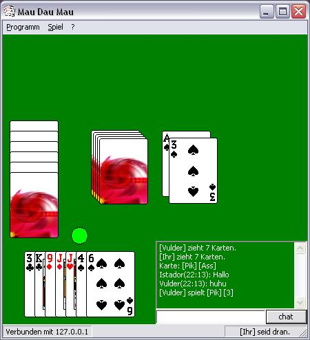

An der Staatlichen Gewerbeschule Energietechnik - G 10 haben meine Klassenkameraden und ich exzessiv das Kartenspiel Mau Mau gespielt. Als 2008 in dem Fach Techniklehre an der Fachoberschule (FOS) die Aufgabe kam, ein beliebiges Projekt in Delphi zu entwickeln, entschied ich mich für das Projekt Mau Dau[1]DAU = Dümmster anzunehmender User Mau.
Entstanden ist ein Windows-Programm mit dem man Mau Mau mit zwei bis vier Spielern über das lokale Netzwerk oder das Internet[2]Vorausgesetzt, dass einer der Spieler einen offenen Port besitzt oder einzurichten vermag. spielen kann. Die Spielregeln können verändert werden, mit den Mitspielern kann gechattet werden, und es existiert eine deutsche Anleitung. Für die Kartengrafiken wird die Windows cards.dll verwendet.
In den Optionen kann die Benutzeroberfläche zwischen Deutsch, Englisch und Französisch[3]Die Übersetzung ins Französiche erfolgte durch Christian Stoffers. umgestellt werden.
Herunterladen kann man Mau Dau Mau hier.
Obwohl es damals für Windows XP entwickelt wurde, läuft es auch heute noch auf Windows Vista, Windows 7 und mittels WINE auf GNU/Linux.
| Sprachen | Delphi, HTML |
|---|---|
| Technologien | Netzwerk-Sockel, DLL, CHM, INI |
| IDE | Turbo Delphi, HTML Help Workshop |
| Beteiligte | 1 (2 gesamt) |

{kind=link}